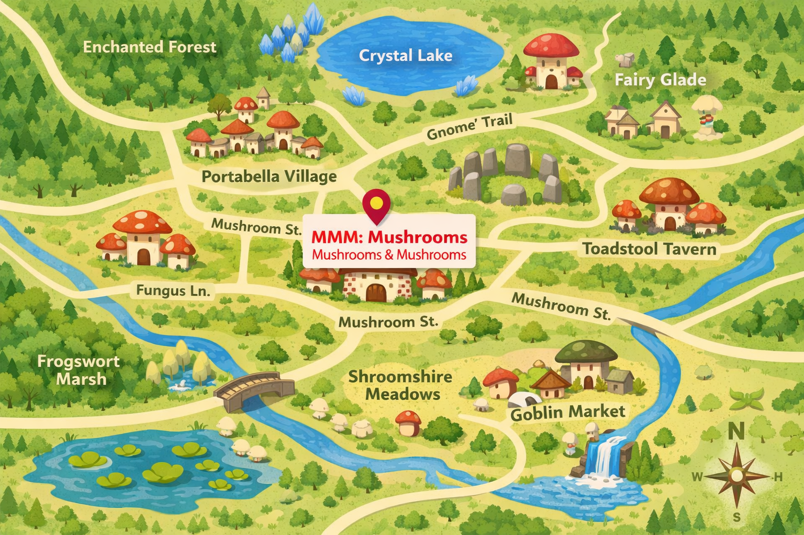

Visit Us

Address: 125 Mushroom St, Mushville, Mushilvania
We are located in the unnaturally large Portabella mushroom next to the druids circle
Phone: (555) 555-5555 | Funguy@mushyman.com
All Mushrooms, All The Time.

Address: 125 Mushroom St, Mushville, Mushilvania
We are located in the unnaturally large Portabella mushroom next to the druids circle
Phone: (555) 555-5555 | Funguy@mushyman.com